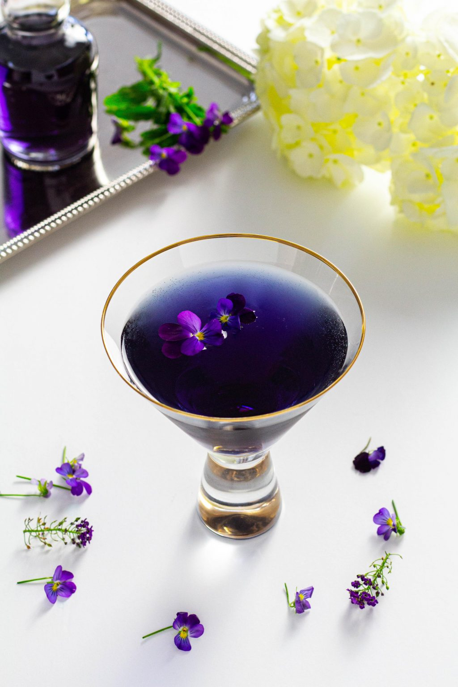

Ingredients
• 300ml soda
• 1 tbsp blue curaçao
• 25ml lime juice
• 75ml grenadine coloring
• lemonade, to top up
• lime wedge, to garnish
Steps
• STEP 1
Pour SODA, curacao lime juice and grenadine COLORING into a highball glass filled with ice and gently stir.
• STEP 2
Top up with lemonade and garnish with a lime wedge. (If it’s not purple enough, try halving the amount of curaçao, or increase the grenadine by another 25ml.)
Back to Home